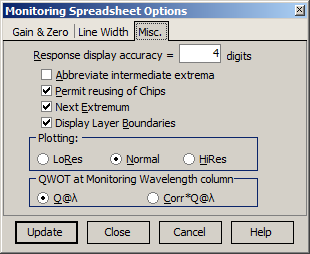

Miscellaneous Monitoring Options
Miscellaneous Monitoring Options
The Miscellaneous option is accessible through the Options button in the lower left corner of the OptiMonitor window.

Response display accuracy allows the user to specify the number of digits in the mantissas of values displayed in the Response column of the Monitoring Spreadsheet. The “Abbreviate intermediate extrema” checkbox allows specifying whether it is necessary to abbreviate intermediate extrema in the Response column or not. The “Permit reusing of Chips” checkbox allows specifying a special mode of the OptiMonitor spreadsheet. If this checkbox is marked, then the C column of the Monitoring Spreadsheet is available for modifications. In this column, it is possible to specify an arbitrary order of witness chip usage. In particular, it is possible to create monitoring spreadsheets for cases when some chips are returned after using other witness chips. “Next Extremum” controls the display of virtual deposition signals from turning points until the next extremum. “Display Layer Boundaries” controls whether layer boundaries are displayed on the monitoring spreadsheet signal plot. The “Plotting” radio buttons allow the user to select the precision level of the monitoring curve displayed in the bottom part of the OptiMonitor window. The “QWOT at Monitoring Wavelength” column option controls how data in the corresponding column of the Monitoring Spreadsheet is represented. “Q@λ” corresponds to the QWOT at the current monitoring wavelength, while “Corr*Q@λ” corresponds to the QWOT at the current monitoring wavelength multiplied by a correction factor. The “Update” button applies specified values to the monitoring spreadsheet without closing the Monitoring Spreadsheet Options dialog. The “Close” button updates the monitoring spreadsheet with the new values and closes the Monitoring Spreadsheet Options dialog. The “Cancel” button closes the Monitoring Spreadsheet Options dialog and discards any entered values.